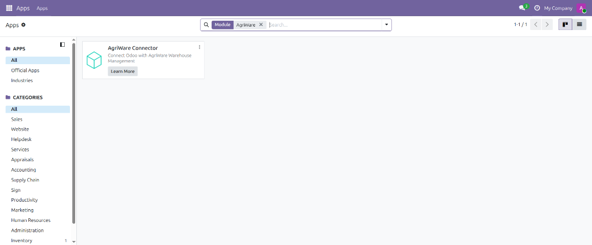

Connect Odoo 19 Inventory with AgriWare, an open-source warehouse management system for agribusinesses.
Agricultural cooperatives, agribusinesses, processors, and input distributors — originally built for businesses operating in Côte d'Ivoire and other African markets, though nothing restricts it to any particular region — that already use Odoo 19 and run a compatible external warehouse management system (WMS) they need to keep in sync with Odoo Inventory, instead of re-entering receipts and dispatches by hand in both places.
AgriWare Connector is a free, open-source Odoo 19 application that lets businesses connect their existing, compatible warehouse management system (WMS) — one built or adapted to use this module's documented REST API — to Odoo Inventory. It exposes that API so the WMS can read product, warehouse, and stock data, and create and validate incoming receipts and outgoing dispatches, without a human re-keying anything into Odoo. AgriWare remains a standalone application; this module is the bridge between the two systems.
Businesses generate, manage, revoke, and replace their own API keys directly inside AgriWare Connector — no AgriWare developer or external administrator involvement needed to get connected. Each key can be given an expiration date or left to remain valid until manually revoked. Using the generated credentials and the documented REST API, businesses can configure a compatible WMS independently; not every warehouse system is automatically compatible — it must support, or be adapted to support, this module's API.
AgriWare Connector itself is, and remains, free and open-source. For businesses that want help going further, AgriWare separately offers optional paid services:

AgriWare Connector listed in Odoo's Apps screen.
The REST API's health check endpoint, confirmed live and responding.
Business / Authorized Odoo User
|
v
AgriWare Connector
|
v
API Management
|
v
Generate API Key
|
v
External WMS
|
| REST API
v
AgriWare Connector
|
| Odoo ORM
v
Odoo 19 Inventory
|
v
PostgreSQL
connector, component, component_event, and queue_job modulesThis module does not send any data anywhere on its own. It only responds to requests from whichever external system an authorized business user explicitly connects by generating an API key, and only for the data categories documented above (products, warehouses, inventory, receipts, and dispatches). No data is shared with AgriWare Connector's authors or any third party.
Full installation steps, the complete API reference (authentication, every endpoint,
request/response examples, and error codes), and security notes ship with the module's
source code under README.md and docs/API.md.
LGPL-3.0